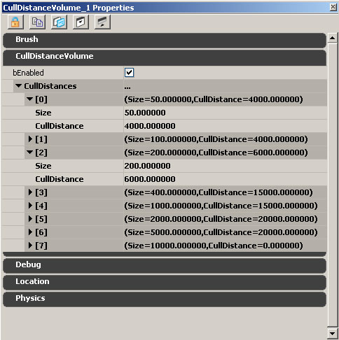

UDN
Search public documentation:
LevelOptimizationCH
English Translation
日本語訳
한국어
Interested in the Unreal Engine?
Visit the Unreal Technology site.
Looking for jobs and company info?
Check out the Epic games site.
Questions about support via UDN?
Contact the UDN Staff
日本語訳
한국어
Interested in the Unreal Engine?
Visit the Unreal Technology site.
Looking for jobs and company info?
Check out the Epic games site.
Questions about support via UDN?
Contact the UDN Staff
关卡优化指南
概述
在虚幻引擎3中，光照和物体间的交互作用占用了CPU和GPU进行关卡渲染时的大部分工作。当优化关卡内容时，通常最好的开始方式是检查物体的光照情况。 同时请查看:掌握虚幻技术关卡优化CPU开销
在CPU方面，大部分的光照开销在于要确定需要渲染哪些物体，以及它们是否使用光照环境；并且如果使用光照环境，还要确定它们使用的是哪种类型。因为大多数使用UE3的游戏都有很多具有动态光照的移动物体，所以很容易使用太多的光照环境。然而，您可以使用几个设置来降低光照环境的性能消耗。 这里是一些光照环境设置，按照从最昂贵到最便宜的(在游戏线程上)顺序，也介绍了何时使用相应的设置： 1) bEnabled=True, bDynamic=True (默认值) 这些设置应该仅在需要的时候使用，它们将会基于InvisibleUpdateTime 和 MinTimeBetweenFullUpdates进行更新。同一时刻不应该有多余50个这样的项处于活动状态。当它们可见、靠近玩家或者当它们移动时需要进行额外的可见性检测。 2) bEnabled=True, bDynamic=False, bForceNonCompositeDynamicLights=True 这些设置的性能消耗是较低的，光照环境仅在第一次调用时更新以后再也不会更新。bForceNonCompositeDynamicLights是允许动态光源影响它们所必须的，它没有任何重大的游戏线程开销。可以有成百个这样的设置，它们唯一的消耗(在第一次更新后)是到动态光源的线性检测(并且仅当拥有者可见时)。这些要比使用预计算阴影的光照看上去要好的多，因为它们可以旋转并且光照仍然可以保持正确。它们通常用于破碎网格物体、GDO以及其他东西。 3) bEnabled=False, bUsePrecomputedShadows (在图元组件上)=True (必须把它从动态通道中取出并放置到静态光照通道中) 这些将会进行光照贴图，渲染消耗非常低并且没有游戏线程开销(除了调用UDynamicLightEnvironmentComponent::Tick函数外)。当移动它们时，它们的效果将会错误。 您也可以在控制台中输入'SHOWLIGHTENVS'，然后您将会获得在那帧中所更新的所有光照环境的列表。在UnrealConsole中的输出如下所示： Log： LE:SP_MyMap_01_S.TheWorld:PersistentLevel.InterpActor_12.DynamicLightEnvironmentComponent_231 No_Detailed_Info_Specified 1 Log： LE:SP_MyMap_01_S.TheWorld:PersistentLevel.InterpActor_55.DynamicLightEnvironmentComponent_232 No_Detailed_Info_Specified 0 Log： LE:SP_MyMap_01_S.TheWorld:PersistentLevel.InterpActor_14.DynamicLightEnvironmentComponent_432 No_Detailed_Info_Specified 1 ... 在每行尾部的‘1’意思是bDynamic被设置为TRUE。 另一个命令'GETALL'，您可以尝试搜索关卡中所有的动态光源。 比如，输入'GETALL DynamicLightEnvironmentComponent bDynamic'将会显示所有DynamicLightEnvironmentComponent和bDynamic的标志。 'SHOWLIGHTENVS' 和 'GETALL'之间的不同是'SHOWLIGHTENVS'显示了那帧中更新的每个光照环境，而'GETALL'显示了那帧中的所有光照环境不管它们是否更新。 另一个重要的CPU消耗是和启动状态改变相关的CPU开销。通过使用我们的多线程渲染器，这个问题通常仅是单CPU系统上的一个要素。 控制台命令STAT SCENERENDERING 将会列出 被遮挡的图元 、 可见的静态网格物体元素 以及 可见的动态图元 ，并且可以决定每帧中渲染多少个独立的图元。
限制PC上的驱动器CPU消耗或GPU消耗时间是很难的。
现在的GPU不同步的特性导致会出现看上去会比正常花费很多事件的随机调用，事实上当这些调用函数需要等待GPU处理完成后才能继续。引擎将每一帧上与GPU同步，并且在 STAT THREADING 中报告每一个线程的等待时间。较高的 游戏线程空闲时间 意味着渲染线程比较慢，而较高的 渲染线程空闲时间 意味着游戏性代码是瓶颈。在游戏线程空闲时间高的情况下，尝试不同的分辨率可以决定渲染线程是CPU的限制还是GPU的限制。
GPU开销
对于GPU来说，基于每个光源或每个物体渲染一遍的方法对于那些覆盖屏幕空间中未被遮挡的较大区域的物体来说性能消耗是非常大的。GPU的主要限制因素通常是着色器的吞吐量。比如，有一个物体被三个光源照亮，这样除了基于每遍渲染的消耗外，也将会导致光照等式和材质被计算三次。 在较高的分辨率下(比如，1280x720 – 通常称为720P)下，使用30毫秒的刷新时间，即使高端的GPUs都可能成为瓶颈。在这个分辨率下照亮动态场景的最主要的消耗是使用阴影缓存，因为它们使用了非常昂贵的着色器来使阴影的边缘变得模糊。根据相对于视觉保真度的妥协的不同，有很多种方法来解决这个问题。同时，在任何分辨率下的后期处理都是一个可以优化的常量。 针对控制台工具或PC上的nvPerfHUD可以用于获取关于什么东西消耗时间长以及为什么的更详细的信息。然而，对于一般的优化来说，重要的是您要确保您的关卡遵循以下指导方针。统计数据
一般来说，统计命令可以用于关卡中各种类型的资源。请参照统计信息描述页面获得关于以引擎所支持的统计指令的详细描述。光照贴图
概述
光照贴图的好处是同时降低了CPU和GPU的负载。在CPU方面，需要考虑的光源－物体的交互作用变少；置于引擎来说，物体不是和光源相对应的，因为所有的光源信息都已经烘焙到了光照贴图中。在GPU方面，物体不需要进行许多遍的渲染，另外光照贴图的渲染遍数也被压缩到了自发光渲染遍数中来进一步的降低渲染遍数，从而导致状态改变消耗。 可以使用VIEWMODE LIGHTCOMPLEXITY 以相对应的编辑器按钮来可视化地查看有多少个非光照贴图的光源在影响一个物体。颜色机制如下所示：
| 光源 | 网格物体颜色 |
| 0 | (R=0,G=0,B=0,A=1) |
| 1 | (R=0,G=255,B=0,A=1) |
| 2 | (R=63,G=191,B=0,A=1) |
| 3 | (R=127,G=127,B=0,A=1) |
| 4 | (R=191,G=63,B=0,A=1) |
| 5 | (R=255,G=0,B=0,A=1) |
 在这个图片中，场景几乎而完全是光照贴图的(黑色)，但添加了一个动态光源来展示如何是关卡呈现绿色。
在这个图片中，场景几乎而完全是光照贴图的(黑色)，但添加了一个动态光源来展示如何是关卡呈现绿色。
应用
总体来说，从性能角度来讲光照贴图明显是有优势的。有两种方式来启用光照贴图的应用，一种是在光源上设置UseDirectLightMap为真，或者在图元(地形、静态网格物体、骨架网格物体…)上设置bForceDirectLightMap 为真。和其它预计算阴影信息一样，光照贴图仅应用于静态物体上。请参照光照参考获得更多信息。
光照贴图的缺点是引擎不知道一个单独的光源对光照贴图的作用，这意味着进行一般的动态阴影是不可能的。换句话说，如果光源是光照贴图的一部分，动态物体不能从那个光源向静态网格物体投射阴影。这个限制的一个解决方法是调制阴影，因为它们可以向任何表面投射阴影，尽管它们也有自己的缺点。
光照贴图VS顶点光照
请参照附件中的电子表格LightMapVSVertexLightingCosts.xlsx获得关于性能消耗的对比。 同时，请记住顶点光照和光照贴图的内存处理上是非常不同的。所有的光照贴图数据都被放到动态载入贴图池中，所以这些贴图不会增加实际的内存占用量。然而，顶点光照，当加载关卡后，它将永远地存储在系统内存中，并且具有常量的内存消耗。 'Stat memory'报告了顶点光照域，一般这个数值应该尽可能地低，并且如果您有内存问题，您所可以做的第一件事情便是确保您在任何可能的时候都在使用光照贴图。 当使用破裂网格物体时，这个方法尤其有用，因为破裂网格物体多边形数量很高，所以顶点光照实际上非常消耗内存。动态阴影
概述
性能问题的另一个潜在的源泉是动态阴影。快速衡量动态阴影是否具有性能影响的方法是通过使用SHOW DYNAMICSHADOWS 命令来切换动态阴影的开关状态。最好给这个命令绑定一个按键，以便当按下按键时关闭动态阴影，释放按键时打开启用动态阴影。按键绑定可以通过在控制台中输入以下命令完成 - 比如： SETBIND F SHOW DYNAMICSHADOWS | ONRELEASE SHOW DYNAMICSHADOWS 。
动态阴影的性能限制
阴影缓冲的GPU性能消耗直接和阴影椎体的屏幕空间尺寸成比例关系。这意味着使用阴影缓冲的附近角色的性能消耗要比较远的角色高。这也意味着投射动态阴影缓冲的较大的对象要比较小的对象的性能消耗高。请参照 阴影缓冲过滤选项页面获得详细信息。 同时，请参照阴影参考指南页面和调制阴影页面获得关于阴影优化的更多信息。静态网格物体及其它图元
概述
性能问题的另一常见原因是静态网格物体。通常，您应该把那些只应用一次或两次的静态网格物体替换为和它们类似的经常使用的网格物体。无论何时，请尝试避免为天空和使用唯一的网格物体。在任何可能的情况下，都要在顶点光照VS光照贴图光照之间进行适当的妥协。您也可以使用图元统计浏览器来查找获得进行优化最合适的方法。图元统计数据浏览器
以下是图元统计数据浏览器的列栏中的描述(以前的静态网格物体统计数据浏览器)：- Type(类型) -资源的类型，可以是骨架网格物体、静态网格物体、地形或BSP(模型)。
- Count(数量) -关卡中那个网格物体实例的数量。
- Triangles(三角形) -每个实例中的三角形的数量。
- Resource Size(资源大小) -资源的大小，以K字节为单位，通过"查看资源应用"来展现，仅和静态网格物体和骨架网格物体有关。
- Lights(光源) (avg LM/ other/ total[平均 光照贴图/其它/总量]) -影响每个实例光照贴图(LM)，非光照贴图(其它的)以及总光源的平均数量。
- Obj/ Light cost(物体/光源 消耗) -物体/光源间交互作用的性能消耗。这个数量意味着要想达到最终的光照目的，这个静态网格物体需要被重新渲染的数量。这个值是非光照贴图光源数量乘以所有实例的部分数量的总和得到的值。光照贴图不包含在这个值中，因为它们是作为自发光遍数的一部分进行渲染的，因此可以认为它是“没有性能消耗”的。
- Triangle cost(三角形消耗) -为了达到光照效果，需要渲染的三角形的数量。这个数量排除了Z-prepass(Z方向的域渲染遍数)、自发光以及光照贴图，因为无论光源的数量是多少，这些都是常量的性能消耗。
- Lightmap(光照贴图) - 光照贴图数据所使用的内存的数量。
- Shadowmap(阴影贴图) -阴影贴图数据所使用的内存的数量。
- LM Res(光照贴图分辨率) -每个实例的平均光照贴图分辨率。
- Sections(部分) -网格物体所具有的部分的数量。
- Radius (半径)(min/max/avg[最小/最大/平均]) -每个网格物体实例的包围和的 最小/最大/平均 半径。

材质
场景中的材质的复杂度可以大大地影响场景的GPU性能消耗。使用的动态光源越多，一个昂贵材质的消耗越大。 编辑器提供了Shader Complexity(着色器复杂度)视图模式，它如下所示： 绿色的覆盖意味着那个材质非常地偏移，黑色的覆盖意味着它是比较昂贵的材质或者有多个动态光源在影响这个材质。注意，要想看到着色器复杂度的精确展现，必须重新构建关卡的光照。
优化材质的技巧：
绿色的覆盖意味着那个材质非常地偏移，黑色的覆盖意味着它是比较昂贵的材质或者有多个动态光源在影响这个材质。注意，要想看到着色器复杂度的精确展现，必须重新构建关卡的光照。
优化材质的技巧： - 创始并限制读取依赖材质的量，这意味着要修改贴图的UVs，比如BumpOffset。
- 使用材质实例化，并为昂贵的特效使用StaticSwitchParameters，以便它们可以很容易地进行 开/关 切换来进行性能妥协。
- 考虑从那些没有很多高光的材质上移除高光。这将会删除大量的像素着色器指令，并且在很多情况下您不会注意到变化。
- 尝试并限制每个材质中要查找的贴图的数量，要查找的材质的数量越多，GPU获取它需要的贴图的时间便越长。
Decals(贴花)
如果不对放置在关卡中的Static Decals(静态贴花)进行正确地处理，那么它将会快速地耗尽很多性能。如果不检测它们，它们将会投射到不必要的额外的网格物体上，并且这将必须进行渲染的数量猛增。所以应该设置它们仅影响它们需要影响的 静态网格物体/BSP，因为这样可以大量地降低要渲染的部分的数量。 关于适用decals和Decal System(Decal系统)的更多信息，请参照UsingDecals#Controlling receiving surfaces（使用Decals#控制接收表面）页面。Skyboxes(天空盒)
概述
Skyboxes(天空盒)通常包含着非常大的物体，它的 包围盒/球 可以包含非常大的世界区域。这有几个值的注意的副作用。首先，和近裁面相交的物体将不能使用遮挡查询，并且将总是被渲染，仅是网格物体上的每个像素都不可见。这通常不受到光源影响的不被照亮的天空穹顶来说不是什么大问题，因为引擎首先会进行一个次深度渲染来最大化早期硬件的z-rejection。还有一些和状态改变相关的性能消耗，当然如果有很多光源照亮您的天空盒时也会产生额外的性能消耗。 天空盒的边界盒是整个世界的大小，这暗示着世界中每个没有通过光照通道或手动排除功能进行明确地排除的独立光源都会影响天空盒。这使得把skybox(天空盒)actors设置为=bForceDirectLightMap= TRUE 并且bAcceptsDynamicLights FALSE ，以便它不会为关卡中的每个单独的动态光源进行重新渲染(比如，枪嘴的火焰)。同时，skybox(天空盒)actors改变为既没有碰撞也不接受decals也是个好主意。
对于skybox(天空盒)中没有被照亮的移动的或旋转的物体来说，通常最好设置 bAcceptsLights 为 FALSE ，从而可以无论材质被照亮与否时，都可以避免CPU侧的不必要进行的过多工作。
概要
关于对skybox(天空盒)操作的概要- 禁用碰撞和接受decals的能力；
- 对于未被照亮的物体，设置
bAcceptsLightsFALSE ； - 对于其他物体，设置=bAcceptsDynamicLights= FALSE ；
- 如果需要，可以使用skybox(天空盒)光照通道，或者设置skybox(天空盒)物体为强制光照贴图或者强制光源上的光照贴图。
- 在任何合适的地方禁用skybox(天空盒)上的
CastShadow(投射阴影)功能，并且禁用bCastDynamicShadow。
常见属性的解释
图元组件
- CastShadow(投射阴影) 控制图元组件是否应该投射阴影。当前动态图元将不会从静态物体上接受阴影，除非同时这个标志和bCastDynamicSahdow标志。
- bCastDynamicShadow(是否投射动态阴影) 控制图元是否在非预计算阴影的情况下投射阴影 – 比如，当图元在一个光源和一个动态物体之间时。这个标志仅在CastShadow设置为TRUE时才有用。目前，动态图元将不会从静态物体上接受阴影，除非这个标志和CastShadow标志都被启用了。
- bForceDirectLightMap(强制直接光照贴图) 即使光源可能没有设置为使用光照贴图，但是将强制使用影响这个图元的所有静态光源的光照贴图。这意味着，图元将永远不会从阻挡静态光源的动态物体上接受任何阴影。在动态光源的情况下将可以正确地投射阴影。
- bAcceptsLights(是否接受光源) 控制图元是否接受任何光源。一个好的优化应该设置所有不需要光照的物体的这项为FALSE(假)。
- bAcceptsDynamicLights(是否接受动态光源) 控制物体是否应该受到动态光源的影响。
- LightingChannels(光照通道) 定义了那个光源可以影响这个图元。
光源组件
- CastShadows(投射阴影) 控制光源是否投射阴影。
- CastStaticShadows(投射静态阴影) 控制光源是否从可以接受静态阴影的物体上投射阴影。
- CastDynamicShadows(投射动态阴影) 控制光源是否应该从不接受静态阴影的物体上投射阴影。
- bForceDynamicLight(强制动态光源) 强制应用 阴影体积/模板阴影。这可以避免立方体贴图的潜在问题，同时也可以避免静态阴影的内存应用问题。
- UseDirectLightMap(使用直接光照贴图) 决定了是否为这个光源使用光照贴图。
- LightingChannels(光照通道) 决定了这个光源影响哪些图元。
其他
Unlit translucency (不带光照的半透明)
Unlit translucency (不带光照的半透明)如果有复杂材质的大量过量描画，将会对性能产生非常严重的影响。测量它的性能影响的最简单的方法是或者通过在控制台通过SHOW UNLITTRANSLUCENCY 来切换它的应用，或者通过在编辑器视口中取消选中相应的显示标志来完成。
技巧: - 通过使用
SHOW UNLITTRANSLUCENCY来检查目标平台上的性能。 - 使用
VIEWMODE SHADERCOMPLEXITY命令进行可视化。 - 避免成层，尤其是对锥形光源和填充光源。
- 在可能的地方充分地应用剔除距离。
BSP
Lighting flags(光照标志)
主要基于位置把BSP分割为一些块。这意味着独立的BSP部分(模型成分)的大小适度，因此可以受到几个光源的影响。控制 光源/BSP 交互的一种方法是使用BSP光照通道并且设置"Accepts Lights(接受光源)"、"Accepts Dynamic Lights(接受动态光源)" 和 "Force LightMap(强制光照贴图)"表面选项。当改变这些选项时将仅在重新构建BSP时才有效，因为这些标志将会被传递给BSP块，而块将会基于这些选项来进行部分地创建。它们直接和图元组件中的bAcceptsLights(是否接受光源)、bAcceptsDynamicLights(是否接受动态光源)以及bForceDirectLightMap(是否强制直接光照贴图)相对应。通过使用这些标志可以大大地提高那些使用了很多BSP的关卡的性能。运行'Clean BSP materials(清除BSP材质)'工具
运行CLEANBSPMATERIALS编辑器命令开关(通过虚幻编辑器的’Tools(工具)’菜单中的'Clean BSP Materials(清除BSP材质)'项来访问)可以清楚那些在最终BSP上不存在的面的画刷所引用的材质。实例包括添加型空间、’共享空间’的多边形(比如邻接的立方体共享一个面)等完全包含的’添加’画刷。 这一，这个操作应该仅在关卡的BSP已经最终定型后在执行。因为如果清楚了隐藏面上的材质引用，当稍后在编辑器BSP导致隐藏的画刷变得可见时，还需要为这些新可见的面重新地分配材质。 这个功能在QA_APPROVED_BUILD_JUN_2007版本中出现的。使用'RemoveSurfaceMaterial(删除表面材质)'
EngineMaterials(引擎材质)包包含了一种成为RemoveSurfaceMaterial的特殊材质，它可以应用于玩家永远看不到的所有表面。在内部，标记为这种材质的BSP表面将不会向BSP画刷提供可以渲染的三角形，它们也不会接受任何静态光照(以及消耗相关的光照贴图资源)。 标记为RemoveSurfaceMaterial的表面在编辑器及PIE中是可见的，以便设计人员可以根据需要测试表面的可见性以及恢复材质。然而，当游戏真正地在编辑器外面运行时，它们是不可见的。 这个功能在QA_APPROVED_BUILD_JUN_2007版本中出现的。关卡
这里是优化关卡的一些技巧：- 请确保skybox(天空盒)是不带光照的，不接受decals(贴花)、光源并且不进行碰撞。
- 在图元数据统计浏览器中，根据数量和实例化的三角形来分类：
- 清除/降低 需要使用很多的网格物体实例的数量。
- 确保最简单的网格物体用作较高的实例化三角形数量(比如，如果2000个三角形被使用了100次，那么请考虑使用200个三角形列)。
- 使用碰撞视图模式来禁用不需要的碰撞。
- 播放游戏来查看什么是可见的，通常添加的玩个物体在游戏正常播放时是不可兼得额，因为编辑器视口不能匹配玩家的移动、眼睛高度等。
- 请确保在世界的下面、几何体的内部等没有隐藏网格物体。
- 把所有不可见的BSP表面标记为不接受光照。
- 在不可见BSP表面上设置默认贴图。
- 使用
VIEWMODE LIGHTCOMPLEXITY来关卡中没有动态光源的地方是黑色：- 仅使用小半径的可切换光源。
- 不使用可切换的定向光源。
- 保持静态网格物体和静态网格物体部分的总数量在预算之内。
剔除距离体积
现在虚幻引擎暂时使用CullDistance(剔除距离)来基于距离剔除物体。如果您可以剔除您的大部分数量的物体，它将会减少可见元素数量和遮挡时间，这是一个较大的性能提高。 我们不必花费时间来手动地设置CullDistance(剔除距离)，我们可以基于CullDistance Volumes(剔除距离)体积来自动地设置它。CullDistance Volumes是一个体积，并且actor有一个数组。每个添加到数组中的域都有CullDistance(剔除距离)和Size(尺寸)设置。 当您保存关卡时，编辑器将会检查关卡中每个物体的边界球的半径，并基于它最匹配的Size(尺寸)类别来为它自动地分配剔除距离。 要想添加CullDistance(剔除距离)体积，请把构建画刷设置得足够大以便可以包含您的整个关卡，右击"Add Volume(添加体积)"按钮，并列表中选择"CullDistanceVolume(剔除距离体积)"即可。
要想设置CullDistance Volume(剔除距离体积)，从为您最小的物体创建CullDistance(剔除距离)开始，并调整那个域的距离/尺寸直到您几乎不能看到小物体在距离内 弹入/弹出 为止。然后您在创建下一个最大的物体的剔除距离(使用一个稍微远点的剔除距离)，直到您最终碰到您想自动剔除的最大的网格物体为止。CullDistance(剔除距离)为0意味着它将不会被剔除。在上面的实例图片中，大小为10,000个单位或者更大的网格物体将不会使用CullDistanceVolumes(剔除距离体积)。 应该调整距离直到您不能看到任何明显的弹入弹出为止。 通过设置标志StaticMeshComponent.Rendering.bAllowCullDistanceVolume=False ，网格物体可以退出CullDistanceVolumes(剔除距离体积)。
StaticMeshComponent.Rendering.bAllowCullDistanceVolume=False
不可编辑的域 CachedCullDistance 显示了当前剔除距离体积分配给网格物体的剔除距离。
请参照可见性剔除页面获得更多信息。
地形
这里是优化地形的一些技巧：- 使用块边界视图。
- 使用线框来清除地检查细分。
- 请参照地形参考指南?页面获得更多细节。
音频
这里是关于优化音频的一些技巧：- 如果不是绝对需要，请确保不要使用多个音频轨迹。保持音频轨迹在它们自己的载入地图中是个好主意，以便当需要时可以动态地载入载出(这样将不会影响性能，打死你是它将影响整个关卡的预算。
- 通过使用
STAT AUDIO,STAT MEMORY来检查预算。 - 使用
LISTSOUNDS来查看当前加载的声音 – 显示了基于每个组存储的波形，以便您知道哪种类型的声音占用了大部分内存。 -
LISTWAVES列出了当前播放的声效(仅PC)。 -
LISTAUDIOCOMPONENTS列出了当前 考虑 的声效。
贴图
虚幻引擎3使用贴图动态载入池。这意味着所有的动态载入贴图都有完全可知的内存占用量，并且引擎在最高的分辨率下将会尽量仅加载 较大的/距离玩家较近 的贴图。然而，它仍然留下了一种潜在的可能性是您加载太多的贴图，从而导致到处都是模糊的。在这种情况下，修复这个问题的唯一方法是把您的贴图应用降低到可以实现的水平。 这里是关于优化贴图的一些技巧：- 检查STAT STREAMING和动态载入保真度因数。如果数值是1.0，那么您将不需要担心，如果高于1.0，则意味着贴图不适合并且某些贴图将是模糊状态。
- 请使用
LISTTEXTURES命令来查看加载了哪些贴图。这将会把一系列加载的贴图输入到日志中。这个信息可以被拷贝到excel表格中，并且自动地通过按下"Text to Columns(把文本转换为列)"按钮(在数据下面)并选择Delimited(分界)->Comma(逗号)-> finish(完成)来把数据组织到相应的 行/列 中。然后按下排序按钮允许您按照升序或降序进行排序。 - 一旦您想excel中输出了一个列表材质，并"Current Size(当前大小)"行中按照降序排序，您将可以使用那个表格来开始分析造成最坏情况的原因…占用最大内存的贴图。
粒子
这里使一些优化粒子的技巧：- 在较小的物体上禁用碰撞(在UT中，Enforcer的武器开火使用了碰撞！)
- 避免过量描画。
- 使用PIX和
VIEWMODE SHADERCOMPLEXITY。 - 使用
STAT PARTICLES来查看数量。 - 手动地位常用特效或较大的特效设置边界盒。
- 确保编辑器生成的最大活动数量是正确的。
- 请参照粒子系统参考指南页面获得更多细节。
- 请使用
MEMORYSPLIT，它将会当前加载的粒子数据中有多少是处于活动状态以及有多少是按照Peak [峰值](一次可以分配给粒子的最大内存)加载的。
动画
以下是优化动画的技巧- 请确保压缩了所有的动画：
- 如果由于一些原因不能压缩，请追问程序员寻求帮助。
- 事实上应该没有原因可以导致不能压缩；如果它看上去不好，可能是bug。
- 把需要进行烘焙和剪切的过场动画缝合到一起。
-
OBJ LIST CLASS=ANIMSET. -
OBJ LIST CLASS=ANIMSEQUENCE.- 如果加载了一个动画序列，那么在那个动画集中的所有动画序列都会被加载。
物理
一般，打开 刚体碰撞视图 (您可以在控制台中使用命令SHOW RIGIDBODY )。然后设置任何可以和车辆或布娃娃进行碰撞的东西的 BlockRigidBody(阻挡钢体) 为 FALSE 。对于较大的高结构，您或许想关闭所有网格物体的刚体碰撞并且在它的上面放置一个大的阻挡体积。
其它考虑事项
前一代引擎的优化不再有效
在上一代的PC游戏中的常用优化是把具有相同材质的较小的物体融合为一个较大的物体。在这一代的游戏引擎中，由于增加的 物体/光源 间的交互作用，从而导致这个优化是 不 可取的。较大的物体将不会被更多的光源触及并且将会不考虑多个动态物体的阴影。在游戏中验证加载的内容(不是编辑器中)
您可以运行OBJ LIST CLASS=SKELETALMESH 命令来确保仅正在使用已经加载的车辆及武器资源。如果结果不是这样的，您可以求助于程序员。比如，在过去，我们遇到过有些地方的Kismet动作引用了太多内容的问题。
其它有用的命令 - 音频的LISTSOUNDS命令
- 贴图的LISTTEXTURES命令
运行 analyzereferencedcontent 命令行开关
请确保没有使用具有过多凸面外壳的网格物体。同时请尝试优化最常使用的网格物体。优化导致最糟糕情况的材质，特别是使用很多次的材质。
CommandletList#analyzereferencedcontent
针对特定游戏平台的调试
在您打算发行游戏的平台上进行性能和内存测试是很重要的。编辑器中的调试工具将会帮助您挑选出最糟糕的妨碍物，但是真正优化您要发行的产品的内容的唯一方式是分析它在目标平台上是如何工作的。请参照统计信息描述页面获得关于以引擎所支持的统计指令的详细描述。 注意内存是伴随着碎片发生的(不管是系统碎片还是内部的引擎碎片)。这意味着您需要根据您的游戏应用方式来设计相对于总应用量的缓冲百分比。 假设您正在使用200 mbs，那么您将需要根据游戏如何到达那个点来期望碎片的百分比。这个碎片可能会随着游戏会话的增长而变得很糟糕，但是它应该不是线性的。它将会把事情转向更糟糕的程度 (可能是10%或20%)。 请咨询程序员。PC
对于PC测试，持续地收集和您的Target Minimum Spec(目标最小规格说明)范围相匹配的PC上统计数据是很重要，同时要去报所有的材质备用选项都可以正确地工作。Playstation 3
即将书写相关文档。Xbox 360
在实际的开发包上检查所有的贴图动态载入、内存、性能问题以及统计数据是很重要的，因为结果可能根据PC的不同而不同。 在xbox调试性能问题的最重要的工具是微软的Performance Investigator for Xbox (PIX)。Xbox的性能调查工具(PIX)
请参照MDSN上的文档?。- LightMapVSVertexLightingCosts.xlsx:更新了考虑了N个实例的情况。